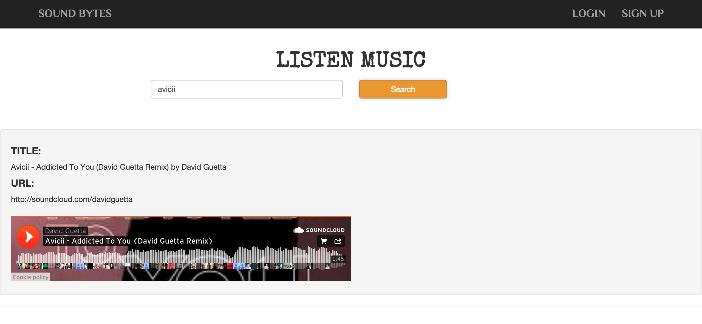

Music (SoundCloud) Functionality
This Page can be used by guest / registered users.
When a search query is entered, the Page calls SoundCloud API to fetch the appropriate results
Snapshot

Music Services
Music services are designed using Angular.JS and soundCloud API.
- Music Service - Checks if the query string is not NULL.
If query string is entered, then it invokes soundCloud API to fetch appropriate results and renders onto the web page
Next Page